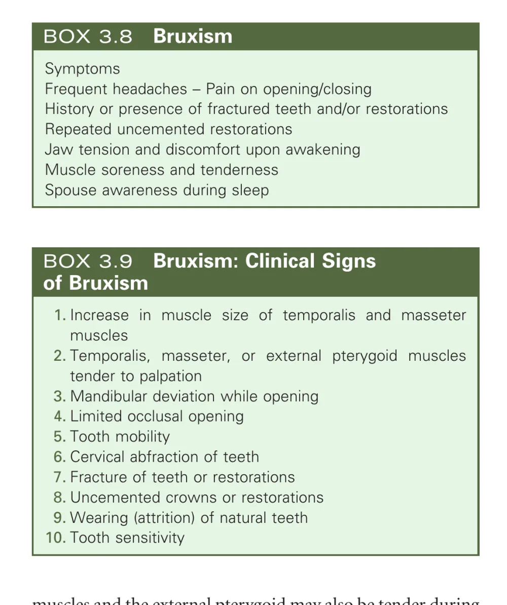
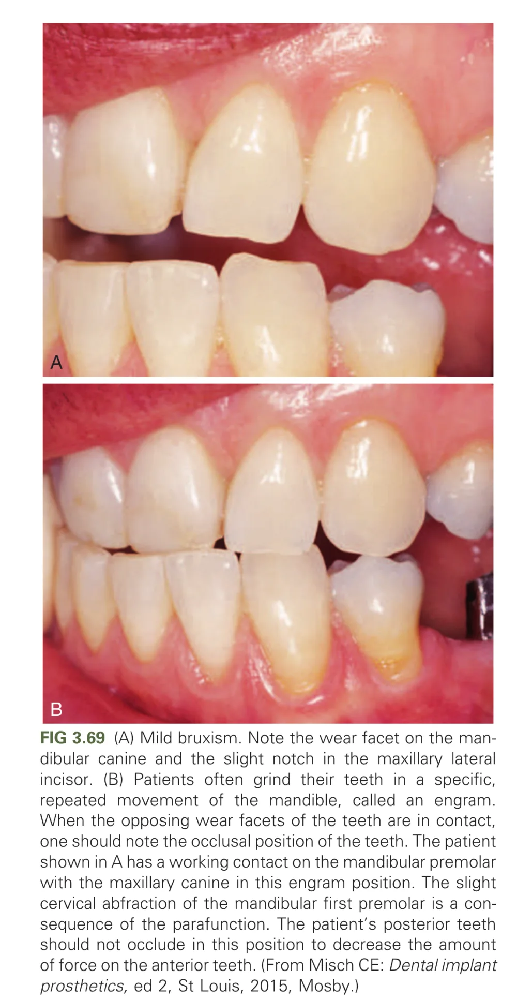

نسخه استخراجشده؛ ترجمه یا تأیید علمی انجام نشده است. وضعیت: captured
در ماژول ۱ آموختی که پارافانکشن مهمترین عامل نیرو است. ولی هرگز نگفتیم چگونه آن را تشخیص بدهی. این یونیت همان شکاف را پر میکند.
گام یکم — علائمی که بیمار گزارش میکند (کادر ۳٫۸):
• سردردهای مکرر — درد هنگام باز و بسته کردن
• سابقه یا وجود دندانها و ترمیمهای شکسته
• ترمیمهایی که مکرراً از سمان درمیآیند
• کشیدگی و ناراحتی فک هنگام بیدار شدن
• درد و حساسیت عضلانی
• آگاهی همسر در طول خواب
ولی به این فهرست تکیهی کامل نکن — بسیاری از بیماران سردرد، ترمیمهایی که مکرراً از سمان درمیآیند یا ناراحتی فک هنگام بیدار شدن را به نیروی زیاد روی دندانها ربط نمیدهند و شرح حال منفی میدهند. پس نبود این علائم، براکسیسم را رد نمیکند. باید هدفمند بپرسی.
گام دوم — نشانههای بالینی (کادر ۳٫۹، ده مورد):
۱. افزایش اندازهی عضلات تمپورالیس و ماستر، ۲. حساسیت عضلات تمپورالیس، ماستر یا پتریگویید خارجی به لمس، ۳. انحراف مندیبل حین باز کردن، ۴. محدودیت باز شدن، ۵. تحرک دندان، ۶. ابفراکشن سرویکالی دندانها، ۷. شکست دندان یا ترمیم، ۸. کراون یا ترمیم خارجشده از سمان، ۹. سایش (اتریشن) دندانهای طبیعی، ۱۰. حساسیت دندانی
گام سوم — معاینهی فیزیکی، و اینجا یک ترفند بالینی هست که باید بدانی:
معاینه باید شامل لمس عضلات جونده — ماستر، تمپورالیس، و پتریگویید داخلی و خارجی باشد. و: «عضلات بیشفعال یا هایپرتروفیشده شایعترین نشانهی براکسیسماند.»
ولی یک مشکل عملی هست: «عضلهی پتریگویید جانبی بیشتر اوقات توسط بیمار براکسر بیشازحد استفاده میشود و لمس آن اغلب دشوار است.»
و راهحل هوشمندانه:
«عضلهی پتریگویید داخلی همسمت، اطلاعات قابلاعتمادتری در این ناحیه فراهم میکند. این عضله در بیشعملکردی بهعنوان آنتاگونیست پتریگویید جانبی عمل میکند و وقتی حساس باشد، شاخص خوبی از استفادهی بیشازحد پتریگویید جانبی است.»
این یک میانبر تشخیصی واقعی است: عضلهای که میخواهی بسنجی قابل دسترس نیست، پس آنتاگونیستش را لمس میکنی که هست.
و اکنون مؤثرترین روش، که سادهتر از همهی اینهاست:
«با این حال، مؤثرترین روش تشخیص براکسیسم، ارزیابی سایش دندانهای طبیعی است.»
یعنی پیش از هر لمس عضله، به دندانها نگاه کن.
و دقیقاً باید بدانی کجا را نگاه کنی: «فاستهای سایش غیرعملکردی روی لبههای انسیزال بیشتر روی دندانهای طبیعی رخ میدهند تا روی کراونهای پرسلن یا با سطح اکلوزال فلزی، بهویژه در مندیبل قدامی و کانینهای ماگزیلا.»
و دلیل مادیاش که ظریف و مهم است:
«مینا در برابر مینا، سایش مادهی اکلوزال بیشتری از تقریباً هر ترکیب دیگری ایجاد میکند (مثلاً مینا در برابر فلز، فلز در برابر فلز و غیره).»
پیامد عملیاش را ببین: «در نتیجه، در یک بیمار بخشیبیدندان، سایش مینا بهآسانی در بیمار براکسر مشاهده میشود.»
و وارونهی این جمله هم درست است و باید هشدارت بدهد: در بیماری که دندانهایش پر از کراون پرسلن یا فلزی است، ممکن است براکسیسم شدید داشته باشد و سایش کمی نشان دهد — چون سطح ساینده عوض شده. آنجا باید به نشانههای دیگر تکیه کنی.

براکسیسم را به چهار درجه طبقهبندی میکنند: غایب، خفیف، متوسط، شدید. و معیار تفکیک، محل و شدت سایش است.
غایب: «نبود هیچ الگوی سایش قدامی در دندانها نشاندهندهی نبود براکسیسم چشمگیر است.»
خفیف: «سایش اندک دندانهای قدامی، ولی بدون آسیب زیبایی.»
متوسط: «فاستهای سایش انسیزال قدامی آشکار، ولی بدون هیچ الگوی سایش اکلوزال خلفی.»
شدید: «نبود گاید انسیزال در نتیجهی سایش بیشازحد، و سایش خلفی دندانها آشکار است.»
و اکنون کلید این طبقهبندی — و اگر تنها یک چیز از این صفحه نگه داری، همین باشد:
«سایش دندان وقتی در نواحی خلفی یافت شود مهمترین است و شدت براکسیسم را از دستهی متوسط به شدید تغییر میدهد.»
یعنی مرز میان متوسط و شدید، حضور سایش خلفی است. سایش قدامی هرقدر هم زیاد باشد، تا وقتی خلف درگیر نشده، متوسط است.
و دلیل این نگرانی: «الگوهای سایش خلفی مدیریتشان دشوارتر است.»
و دلیلش: سایش خلفی معمولاً یعنی گاید قدامی در حرکات جانبی از دست رفته و دندانهای خلفی در اکسکرسیون تماس دارند. با تماس خلفی، ماستر و تمپورالیس منقبض میشوند و نیروی گاز در حرکات جانبی به اندازهی گاز گرفتن خلفی میرسد؛
ولی با گاید انسیزال و بدون تماس خلفی، دو سوم فیبرهای این عضلات منقبض نمیشوند و نیرو بهشدت کم میشود. به همین دلیل در براکسیسم شدید، پیش از ترمیم ایمپلنتی ممکن است لازم باشد صفحهی اکلوزال یا گاید انسیزال اصلاح شود تا تماسهای خلفی در حرکات جانبی حذف شوند.
و اکنون مفهوم انگرام — که در ماژول ۱ فقط نامش را شنیدی و اینجا کاربردی میشود:
«بیماران اغلب دندانهایشان را در یک حرکت مشخص و تکرارشوندهی مندیبل میسایند، که انگرام نامیده میشود.»
و روش استفاده از آن در معاینه:
«وقتی فاستهای سایش متقابل دندانها در تماساند، باید موقعیت اکلوزال دندانها را ثبت کرد.»
این یک تکنیک ساده و قدرتمند است: فاستهای سایش را روی هم بگذار تا مندیبل در همان موقعیتی قرار گیرد که بیمار شبها در آن میساید. حالا میبینی نیرو دقیقاً کجا میرود.
یک نمونه: بیماری که «تماس کارگر روی پرمولر مندیبل با کانین ماگزیلا در این موقعیت انگرام دارد» — و «ابفراکشن سرویکالی خفیف پرمولر اول مندیبل، پیامد این پارافانکشن است.»
به این زنجیره دقت کن: انگرام موقعیت را تعیین میکند ← موقعیت تماس را تعیین میکند ← تماس محل ابفراکشن را تعیین میکند. پس ابفراکشن یک نشانهی تصادفی نیست؛ یک نقشه است.
و قاعدهی طراحی که از این برمیآید:
«دندانهای خلفی بیمار نباید در این موقعیت اکلود شوند تا مقدار نیروی وارد بر دندانهای قدامی کاهش یابد.»
این جمله را با دقت بخوان — با جدا کردن خلف در موقعیت انگرام، نیروی قدامی کم میشود. یعنی همان منطق دیسکلوژن که در یونیت ۱٫۴ دیدی، اینجا به یک موقعیت مشخص و قابل اندازهگیری در همان بیمار گره میخورد.
پس در بیمار براکسر، انگرام را پیدا کن و پروتز را طوری طراحی کن که در آن موقعیت خاص، تماس خلفی نداشته باشد.
